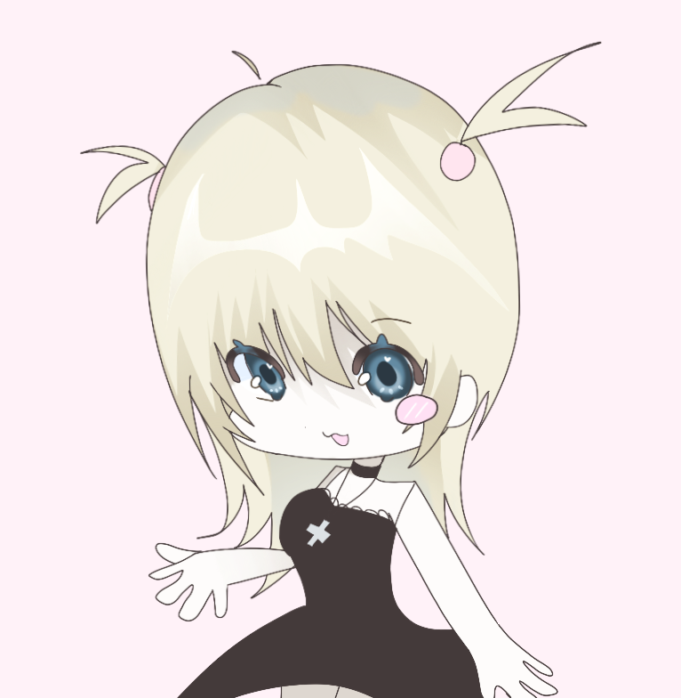
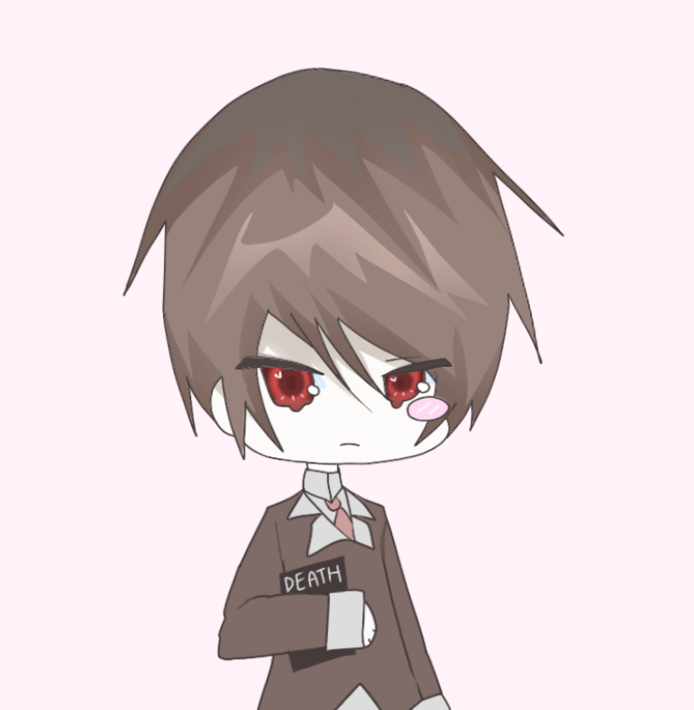
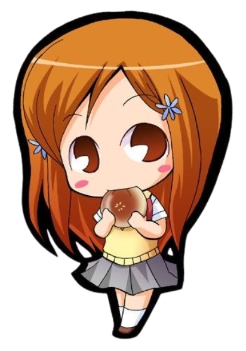

MISA AMANE
Misa Amane is one of the main characters of deathnote and is the second deathnote user. She loves Light Yagami so much to the point that she gets manipulated by him throughout the story.

LIGHT YAGAMI
Light yagami is the main character of deathnote, an intelligent teenager who kills criminals and everyone who gets in his way. He's very manipulative and uses his charisma to take advantage of everyone around him.

L LAWLIET
L lawliet is an intelligent and mysterous detective who doesn't reveal his appearance until he meets Light. He also manipulates Light throughout the story into thinking that he doesn't know his true identity.

ICHIGO KUROSAKI
Ichigo Kurosaki is the main character of Bleach. He is a human who is also a Substitute Soul Reaper where he fights evil alongside his friends. He is a delinquent but with a kind heart and protects good no matter how hard the obstacle is whether it's life threatening or not.

ORIHIME INOUE
Orihime Inoue is the deuteragonist of the story. She is one of Ichigo’s best friends (soon wife) who helps to fight off evil that tries to take over the world of the living and the dead. She has a kind hearted and understanding soul.

RUKIA
Rukia Kuchiki is a shinigami, who will soon be the captain of the 13th Division. She is one of Ichigo’s best friends who is determined to protect and stand up to her friends and family to pay back and inspired by Ichigo’s selfless determination to save her from execution no matter the consequences.


 CHARACTERS:
CHARACTERS: